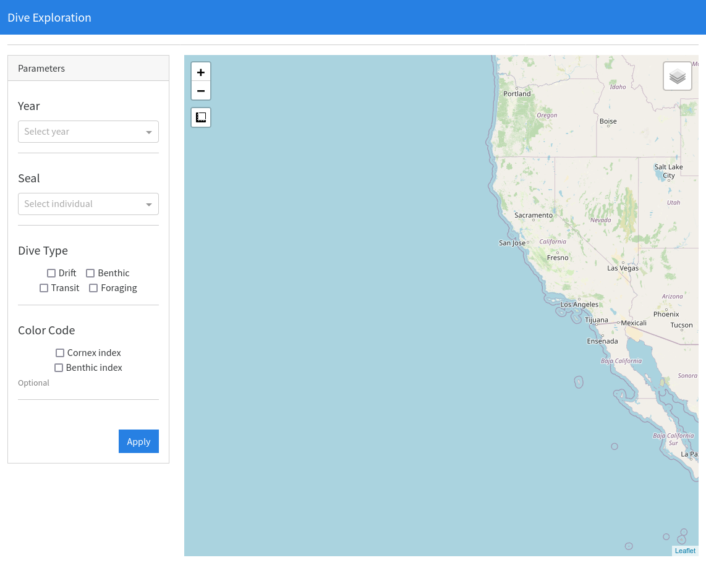
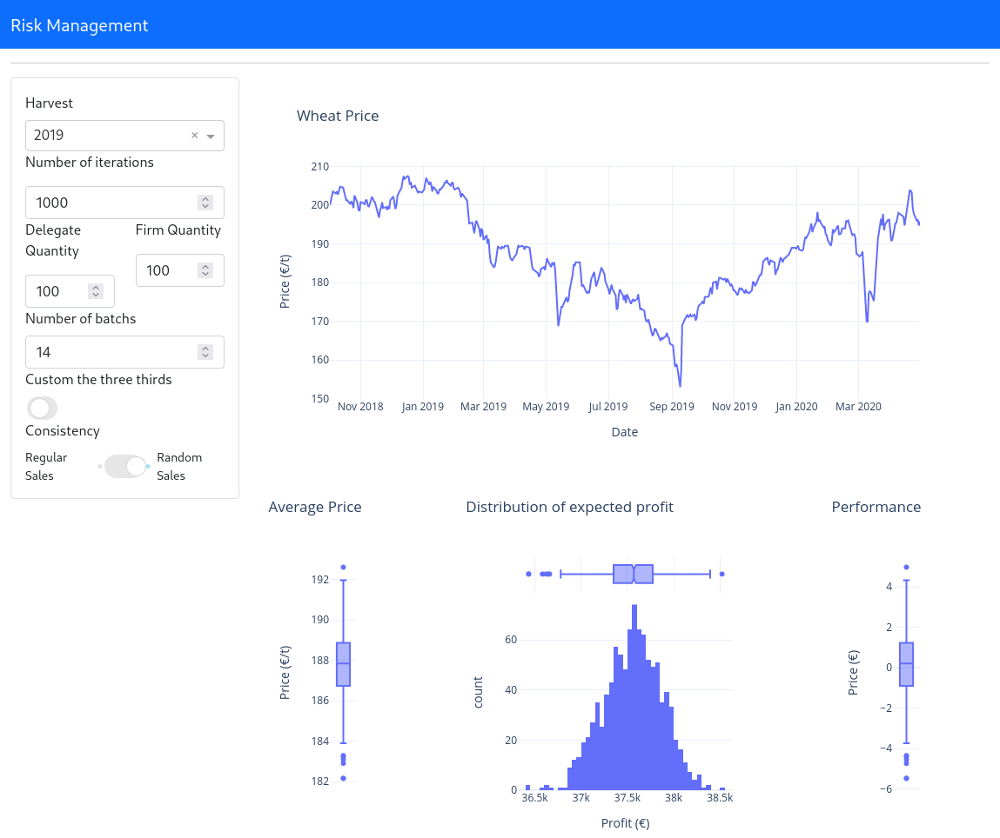
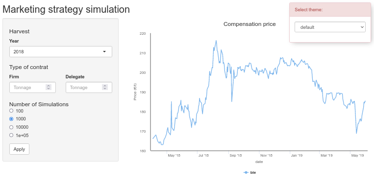
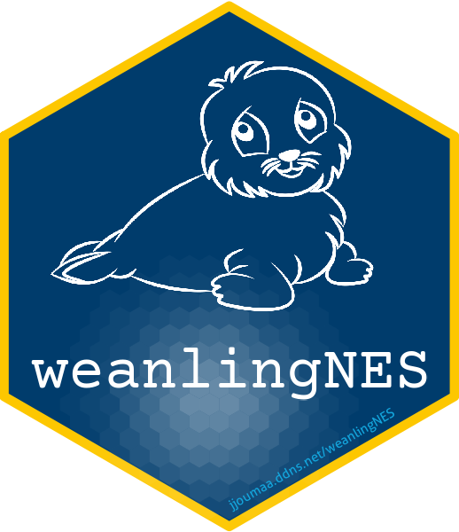

Some Achievements:
Welcome to my portfolio. I hope you enjoy it!
Notebooks
- Dataiku Interview: Test job interview for Dataiku
- Sægus Interview: Test job interview for Sægus
- Booking Interview: Test job interview for Booking
Webapps
| DiveMap (Python) | Dash App A webapp to explore the diving behavior of northern elephant seals |  |
| CropRisk (Python) | Dash App A webapp used as a proof of concept for risk assessment in wheat trading |  |
| CropRisk (R) | Shiny App same application but using R and Shiny (it was one of the first version before switching to Python and Dash) |  |
Package
| weanlingNES | R Package The goal of this package is to provide in one place the analyses and functions developed during my postdoc on the ontogeny of diving behavior in elephant seals. |  |
Publications
- Jouma’a Joffrey Phd Thesis - 2016: Resource Acquisition Strategies and Cost of Transport in Southern Elephant Seal (http://www.theses.fr/2016LAROS014)
- Jouma’a Joffrey, Yves Le Bras, Picard Baptiste & Guinet Christophe. (2017) Three-dimensional assessment of hunting strategies in a deep diving predator. Marine Ecology Progress Series (10.3354/meps12191)
- Jouma’a Joffrey, Yves Le Bras, Richard Gaëtan, Vacquié-Garcia Jade, El Ksabi Nory, Picard Baptiste & Guinet Christophe. (2016) Adjustment of diving behaviour with prey encounters and body condition in a deep diving predator: the Southern Elephant Seal. Functional Ecology, 30, (4), 636-648 (10.1111/1365-2435.12514)
- Cazau Dorian, Bonnel Julien, Joffrey Jouma’a, Yves Le Bras & Guinet Christophe. (2017) Measuring the marine soundscape of the Indian Ocean with Southern Elephant Seals used as acoustic gliders of opportunity. Journal of Atmospheric and Oceanic Technology (10.1175/JTECH-D-16-0124.1)
- Day Louise, Jouma’a Joffrey, Bonnel Julien & Guinet Christophe. (2017) Acoustic measurements of post-dive cardiac responses in southern elephant seals (Mirounga leonina) during surfacing at sea. Journal of Experimental Biology (10.1242/jeb.146928)
- Yves Le Bras, Jouma’a Joffrey, Picard Baptiste & Guinet Christophe. (2016) How elephant seals (Mirounga leonina) adjust their fine scale horizontal movement and diving behaviour in relation to local prey encounter rate. PLoS One (10.1371/journal.pone.0167226)
- Vincent Cecile, Ridoux Vincent, Fedak Mike A., McConnell Bernie J., Sparling Carole E., Leaute Jean-Pierre, Jouma’a Joffrey & Spitz Jérôme. (2016) Foraging behaviour and prey consumption by grey seals (Halichoerus grypus)—spatial and trophic overlaps with fisheries in a marine protected area. ICES Journal of Marine Science, 73(10), 2653–2665 (10.1093/icesjms/fsw102)
- Génin Alexandre, Richard Gaëtan, Jouma’a Joffrey, Picard Baptiste, El Ksabi Nory, Vacquié-Garcia Jade & Guinet Christophe. (2015) Characterization of postdive recovery using sound recordings and its relationship to dive duration, exertion and foraging effort of southern elephant seals (Mirounga leonina). Marine Mammal Science, 1748-7692 (10.1111/mms.12235)
- Richard Gaëtan, Vacquié-Garcia Jade, Jouma’a Joffrey, Picard Baptiste, Génin Alexandre, Arnould John, Bailleul Frédéric & Guinet, Christophe. (2014) Variation in body condition during the post-moult foraging trip of southern elephant seals and its consequences on diving behaviour. Journal of Experimental Biology, 217, 2609-2619 (10.1242/jeb.088542)
- Spitz Jérôme & Jouma’a Joffrey. (2013) Variability in energy density of forage fishes from the Bay of Biscay (north-east Atlantic Ocean): reliability of functional grouping based on prey quality. Journal of Fish Biology, 82(6), 2147-2152 (10.1111/jfb.12142)